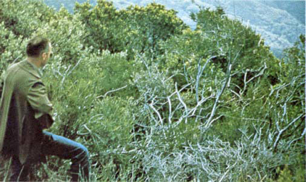
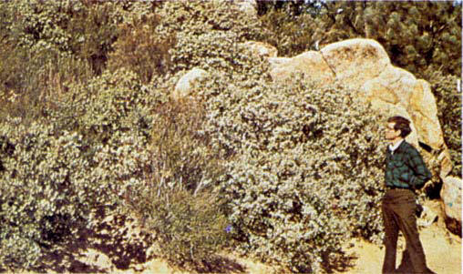
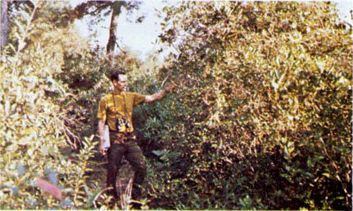
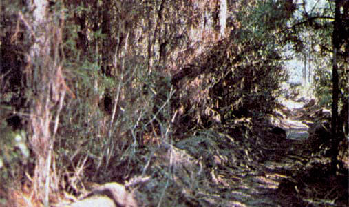

Fires intensity and fast-spreading fires involve the foliage and live and dead fine woody material in the crowns of a nearly continuous secondary overstory. Stands of mature shrubs, 6 or more feet tall, such as California mixed chaparral, the high pocosin along the east coast, the pinebarrens of New Jersey, or the closed jack pine stands of the north-central States are typical candidates. Besides flammable foliage, dead woody material in the stands significantly contributes to the fire intensity. Height of stands qualifying for this model depends on local conditions. A deep litter layer may also hamper suppression efforts. Photographs 9, 10, 11, and 12 depict examples fitting this fuel model.

Photo 9. Mixed chaparral of southern California; note dead fuel
component in branchwood.

Photo 10. Chaparral composed of manzanita and chamise near the
Inaja Fire Memorial, Calif.

Photo 11. Pocosin shrub field composed of species like fetterbush,
gallberry, and the bays.

Photo 12. High shrub southern rough with quantity of dead limbwood.